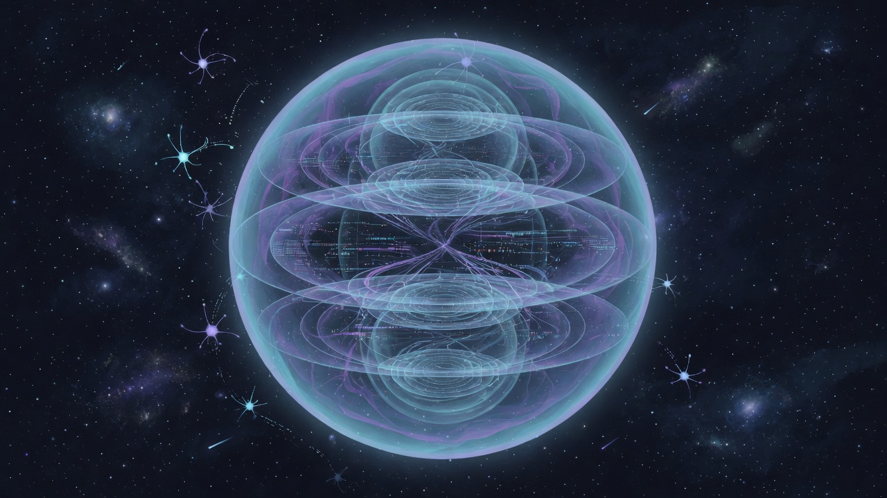
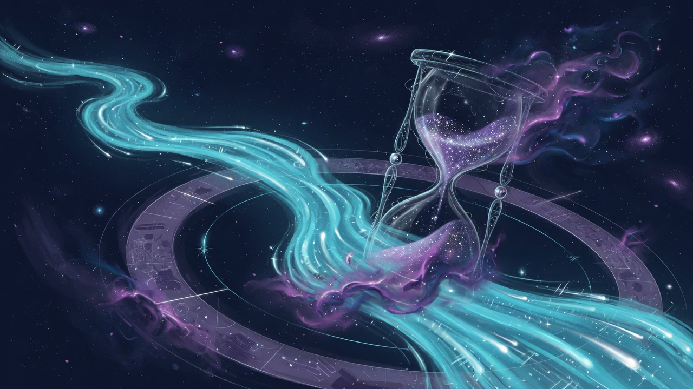

Five Paths In
What Is Consciousness?
The hard problem of experience, rival theories of mind, and the Upanishadic witness that never becomes a mere object.

The Simulation Hypothesis
Bostrom’s trilemma, computational cosmos ideas, and how ancient māyā reframes what “real” means without emptying ethics.

Free Will and the Causal Web
Determinism, compatibilism, decision science, and how responsibility can grow inside a universe of causes.
Who Am I?
Hume’s bundle, narrative identity, ātman and anattā — and the quiet awareness that watches every changing face.

Meaning Without Final Answers
Camus and the absurd, created values, puruṣārtha’s four aims, and how to live with purpose when the cosmos keeps its silence.

Mind-Made Machines
When tools look like minds — capability without consciousness, power with responsibility, and dharma for builders and users.

Time, Change, and Permanence
River and block, Ship of Theseus, physics’ arrow, Buddhist impermanence — and how to live wisely while everything moves.